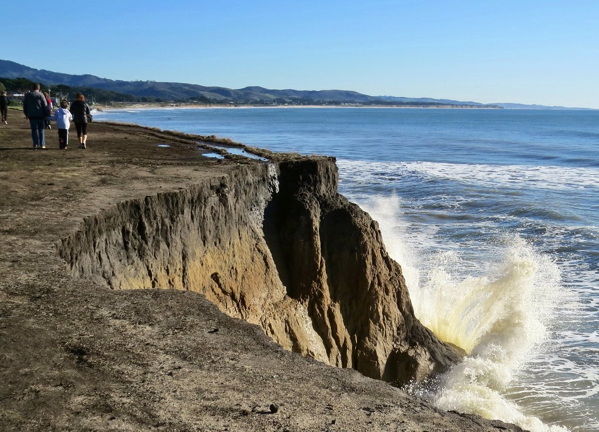

Plan your summer vacation at Pleasure Island, home to some of the most beautiful North Carolina beaches. Enjoy the sand, surf, and our quaint, historic beach towns of Carolina Beach, Kure Beach, and historic Fort Fisher. Come for the day, a weekend getaway, or a long beach vacation. You're sure to discover why the summer never ends on Pleasure Island! You'll find everything you need to create your own custom itinerary for your Pleasure Island trip here on our site. Check the Event Calendar to see what's happening on the island. Find out Where to Stay and book your reservations now. Then choose ideas for Where to Eat, Where to Play, and any Local Services you might need along the way. We've got all your Pleasure Island vacation planning right here! When you cross Snow's Cut Bridge, you'll leave the mainland and your worries behind. You have reached one of the most unique and vibrant North Carolina beaches that has a little something for everyone - young , old and in between. In minutes, you'll experience one of the most uniquely classical and authentic North Carolina barrier islands on the eastern seaboard. Our beaches are easily accessible with a vibrant year round community only minutes south of historic Wilmington, NC and just a short ferry ride from Southport, NC and the Grand Strand of Myrtle Beach, SC.
Pleasure Island is a truly distinctive and affordable vacation destination. Let us help you plan your vacation so you can get the most of what you want during your stay. Browse full profiles for events, activities, accommodations, restaurants, and services and add your favorites to your online itinerary. We promise you will never forget your visit to Pleasure Island, where the summer never ends!